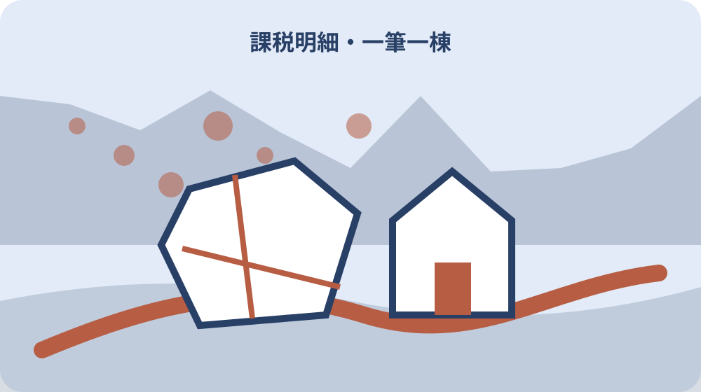

先に結論を確認する
この記事の答え：納税通知書と課税明細書の役割を分け、年度と名義を確定します。そのうえで土地は一筆、家屋は一棟を一行として、課税明細書の順番どおりに転記します。
森町で最初に照合する条件：5月中旬に届く納税通知書と課税明細書を分け、課税明細書の各行を土地一筆または家屋一棟の単位で転記する。
通知書と課税明細書の役割を分ける
固定資産税の書類を確認するときは、最初から金額だけを見ないようにします。森町公式が同封関係を明記しているのは、納税通知書と土地・家屋の課税明細書です。手元に納付書がある場合も、それは支払いに使う別資料として脇へ置き、課税明細書の一筆一棟を転記する作業へ混ぜません。
森町は納税通知書を5月中旬に納税義務者へ通知し、そこへ土地と家屋の課税明細書を同封すると案内しています。家族が先に支払いだけ済ませた場合でも、課税明細書を領収関係の紙と一緒に処分しません。資産の所在や地番を翌年と比べる土台になるため、支払いの完了と資産内容の確認を別の作業にします。
整理を始める前に、年度、通知書番号、宛名、届いた日を表紙へ書きます。複数の家族が森町に土地や家屋を持っていると、宛名以外は似た書類が並ぶことがあります。誰の何年度分かを先に確定すれば、別の納税義務者の土地を同じ台帳へ写す誤りを防げます。
この段階の成果物は、一つの年度・名義の納税通知書と課税明細書を、一つの資産ファイルへ結び付けた表紙です。税額の高低を評価したり、売却の判断をしたりする必要はありません。どの課税明細書を根拠に何を記録したのか、家族が後から再現できる入口を作ります。
一筆一棟を台帳の一行にする
森町の課税明細書は、土地を一筆、家屋を一棟という単位で記載します。台帳でもこの単位を崩さず、一行に一つの土地または一つの家屋だけを置きます。自宅一式、実家一式のようにまとめると、後で一部を相続したり一棟だけ解体したりしたとき、どの記録が変わったのか追えません。
台帳の最初の列には資産種別を置き、土地か家屋かを明記します。その隣に課税明細書上の行番号、自分で付ける管理番号、所在、地番などを並べます。町の書類に行番号が見当たらない場合は上から順に仮番号を振り、原本のどの位置から写したか分かるようにします。
一筆の土地に複数の家屋がある場合も、土地一行と家屋ごとの行を分けます。反対に、住宅の敷地が複数筆に分かれていれば、見た目が一つの庭でも土地は筆ごとに記録します。現地で一体に見えることと、課税明細書に記載される単位は同じとは限りません。
転記が終わったら行数を数え、課税明細書の土地行数と家屋行数に一致するか確認します。合計金額だけが合っていても、一行を二度写し別の行を落としている可能性があります。土地何筆、家屋何棟という件数の照合を置くことで、家族が全体を見直すときの手掛かりになります。
土地欄は所在と地番から写す
土地の転記は、価格より先に所在と地番から始めます。似た字名や連続した地番が並ぶと数字の一桁違いを見落としやすいため、所在、地番、地目、面積、価格、課税標準額の順で横へ進みます。読みづらい数字は推測で補わず、原本へ印を付けて後の確認欄に残します。
地番と日常に使う住所は同じ表示とは限りません。郵便物が届く住居表示を土地の地番として転記すると、登記事項や測量資料との照合が難しくなります。台帳には課税明細書どおりの所在・地番を置き、家族が普段呼ぶ場所の名前や住宅の住所は備考欄へ分けます。
同じ敷地に宅地、畑、山林など複数の地目が含まれる場合は、地目ごとの行を保ちます。利用の見た目だけで現在の地目を決めず、課税明細書の記載と現況の気付きは別の列へ書きます。農地や山林について別の手続資料があるなら、その保管番号だけを関連資料欄へ入れ、税資料へ混ぜ込みません。
土地欄の照合では、前年の台帳との差がある行だけに印を付けます。面積、価格、課税標準額が変わった理由をその場で断定せず、何が変わったかを正確に残します。売買、分筆、合筆、地目変更など思い当たる出来事があっても、町の記録との関係は確認してから注記します。

家屋欄は建物ごとの違いを残す
家屋は母屋、離れ、物置、倉庫など、敷地内に複数棟あることがあります。課税明細書の一棟ごとの行をそのまま台帳へ移し、家族内の呼び名だけで一つにまとめません。所在、家屋番号、種類、構造、床面積など、原本にある識別情報を先に写してから価格関係の欄へ進みます。
家族が『古い物置』と呼んでいる建物が、どの家屋行に当たるか分からないこともあります。その場合は、屋根色、位置、入口の向きなど現地確認用の仮メモを別欄に置きます。課税明細書だけから建物を決め付けず、登記事項、建築時の資料、現地の配置を順に突き合わせます。
解体済みと思っていた家屋が明細に残っていたり、増築した部分の扱いが分からなかったりしたら、発見日と対象行を記録します。課税されているから現存する、現地にあるから必ず同じ行に載る、と一方向に判断しません。解体日、届出、登記、町の確認時点が異なる可能性を踏まえます。
家屋台帳には写真番号を付けると照合しやすくなりますが、写真自体を税の証拠と断定しないことが大切です。全景、接道側、建物間の位置関係を安全な場所から撮り、撮影日を残します。課税明細書の行、登記事項、写真を管理番号で結べば、遠方の家族も同じ建物について話せます。
評価額と課税標準額を混ぜない
課税明細書には似た金額が複数並びます。森町は、課税標準額は原則として土地、家屋、償却資産の評価額だが、特例が適用される場合は特例適用後の額になると説明しています。評価額と課税標準額が違っていても、転記ミスと即断せず、それぞれ別の列へそのまま写します。
台帳の列名を『金額一』『金額二』のように省略すると、翌年に意味を忘れます。評価額、固定資産税の課税標準額、都市計画税の課税標準額、税額など、原本の名称を保って見出しを付けます。空欄や記号も勝手にゼロへ置き換えず、原本の表示が空欄だったことを残します。
森町の固定資産税は課税標準額に1.4パーセントを乗じて算定すると案内されています。ただし、一行の金額へ単純に税率を掛けた数字と通知書の税額が一致しないからといって、誤りとは限りません。端数処理や特例など自分で確定できない要素は、計算を重ねるより対象欄を示して尋ねます。
家族へ説明するときは、資産の価格、税を計算する基礎、実際に納める年税額を三段に分けます。『この土地の税金はいくらか』という問いにも、明細の一行を聞いているのか、所有者全体の年税額を聞いているのかで答えが変わります。台帳の用途は金額を評価することではなく、質問の対象を特定することです。
一月一日の記録と現在を分ける
固定資産税は毎年1月1日の所有状況を基準にします。春や夏に売買、相続、解体があったとしても、その年度の通知書は1月1日時点の記録を起点に読みます。台帳には賦課期日欄を設け、通知書年度と1月1日の所有者を同じ行で確認できるようにします。
現在の登記名義や利用者が通知書の宛名と違う場合も、古いと決め付けて書き換えません。課税上の基準日、登記を申請した日、登記が完了した日、鍵を引き渡した日、実際の利用を終えた日は別々です。出来事を日付順に並べ、どの時点の情報を比べているかを明らかにします。
相続手続の途中では、故人名義の資料、相続人代表者宛ての連絡、現在の管理者の記録が同時に存在し得ます。この原稿の台帳は相続分を決めるための表ではありません。誰に何が届き、どの資産行を確認したかという事実を整理し、権利関係の判断は登記や合意の資料へ戻します。
年ごとの変化を追うときは、前年の行を上書きせず新年度の列または別シートを追加します。変化がなかったことも記録の一部です。通知書が届かなかった、宛先が変わった、対象行が増減した場合は、その事実と確認日を残し、推測した理由を確定事項と同じ欄へ書きません。
名寄帳は所有資産の一覧確認に使う
森町は名寄帳を、所有者である納税義務者ごとの土地、家屋、償却資産の明細一覧と説明しています。手元の課税明細書が見当たらないときや、一人の名義にどの資産がまとまっているか確認したいとき、名寄帳という選択肢があります。名称だけで登記簿の代わりと思わないことが出発点です。
町の案内では、名寄帳の記載内容は納税通知書に添付される課税明細書と同じです。したがって、名寄帳を取れば権利関係の全資料が一度にそろうわけではありません。台帳では、課税上の資産一覧を確認した資料として位置付け、登記事項証明書や公図など別目的の資料と役割を分けます。
名寄帳を請求する前に、誰の、どの年度の、単有か共有か、何を確認したいのかを一文にします。複数年度の変化を見たいなら必要な年度を整理し、現在分だけで足りるなら過剰に集めません。提出先へ出す証明が必要なのか、家族内で一覧を確かめたいのかでも選ぶ資料が変わります。
取得後は、課税明細書から作った台帳と行数・所在・地番を照合します。違いがあれば、片方を正しいとして消すのではなく、資料名、年度、取得日を付けたまま差異表へ移します。比較対象の時点が違うだけかもしれないため、資料の作成基準を税務課へ確認できる形にします。
評価証明書などは提出目的から選ぶ
森町が案内する固定資産税関係資料には、評価証明書、公課証明書、課税証明、名寄帳、記載事項証明書等があります。名前が似ていても、記載される内容と提出先が求める用途は同じではありません。何となく詳しそうな証明を選ばず、まず提出先から正式な資料名と必要年度を聞きます。
評価額を示す必要があるのか、税額に関する内容が必要なのか、所有資産の一覧を確認したいのかを分けます。家族内の整理だけなら課税明細書や名寄帳で足りる場合があり、外部への提出には証明書を指定される場合があります。この記事では個別案件に必要な証明を断定せず、確認質問を作るところまでを扱います。
森町の窓口申請では、本人、同居親族、相続人、本人以外の代理人が申請者になり得ます。ただし相続人は相続権を確認できる書類、代理人は委任状が必要です。誰が窓口へ行けるかだけで決めず、申請者の立場を証明する書類まで一組にして準備します。
証明書を受け取ったら、用途、提出先、対象年度、納税義務者、受取日を台帳の証明履歴へ残します。原本を提出するのか写しでよいのかも提出先へ確認します。同じ証明を家族が重ねて請求しないよう、請求中、受領済み、提出済みの状態を分けて共有します。
単有と共有の資料を別束にする
一人だけの名義で持つ資産と、複数人で共有する資産は、同じ所在地でも資料を分けます。共有資産は通知を受け取る代表者の名前だけを見て、その人が単独で所有すると誤解しないことが大切です。台帳の所有形態欄には、原本で確認できた範囲だけを記し、持分は登記事項で別に確認します。
森町は共有名義の土地・家屋を共有者ごとに分けて課税できず、連帯納税義務になると案内しています。共有不動産の通知送付先を扱う別記事に対し、ここでは一筆一棟の資産行を単有台帳へ混ぜないことに集中します。通知の宛名と資産の所有形態は別の列で管理します。
名寄帳や証明書の手数料についても、森町は単有と共有でそれぞれ必要になると案内しています。請求前に単有分だけか共有分も必要かを確認すれば、窓口で目的を伝えやすくなります。家族が複数名義の資料を集める場合は、納税義務者ごとの請求状況を一覧にします。
共有者間で売る、残す、分けるという話を始める前に、どの一筆・一棟が共有資料に載るかを揃えます。この台帳は合意を代行するものではありません。全員が同じ資産を指せる管理番号を作り、登記、税資料、現地写真を混ぜずに参照できる状態をつくるための下準備です。
原本を守り家族が追える索引を作る
森町は課税明細書を再発行しないと明記しています。転記後に不要になったと思って捨てず、原本は年度ごとに用意した保管袋またはファイルへ戻します。台帳には原本保管場所を『実家の棚』のような曖昧な表現ではなく、箱番号、ファイル名、年度まで書きます。
遠方の家族と共有するために撮影やスキャンをする場合は、全ページが写っているか、端が切れていないか、年度と宛名が読めるかを確認します。個人情報を含むため、不特定多数が見られる場所へ置きません。共有相手と目的を決め、不要になった複製の扱いも家族で合わせます。
索引には資産管理番号、資料名、年度、名義、原本の所在、電子データ名、最終確認日を置きます。本文画像を大量に貼るのではなく、どの資料へ戻ればよいかを示す地図にします。台帳の数字を修正した場合は、元の記載を消さず修正日と根拠資料を残します。
毎年の通知が届いたら新しい年度を追加し、前年ファイルをそのまま置き換えません。家族が交代しても、どの行が増え、減り、変わらなかったか確認できます。整理の完了日は、全てを理解した日ではなく、原本と転記行が照合され、不明点が質問表へ移った日とします。
大石の視点：税資料と現地を往復する
私は、税資料だけで土地や建物の現況、境界、権利関係まで決めないことが重要だと考えます。課税明細書は所有資産を整理する優れた入口ですが、道路の状態、境界標、建物の傷み、残置物、農地の利用状況を示す現地記録とは役割が違います。入口として使い、必要な資料へ枝分かれさせます。
売ると決めていない実家でも、一筆一棟の台帳は役立ちます。草刈りや修繕の対象を家族で話すとき、母屋、倉庫、隣接地を同じ言葉で指せるからです。査定額を先に置くのではなく、名義、道路、境界、地目、建物、維持費の順で分からない点を減らします。
課税明細書に土地があるから接道条件を満たす、家屋が載るから登記が完了している、といった飛躍は避けます。税資料、登記事項、地図、現地写真の間で一致する点と違う点を分けます。違いが見つかったときこそ、相談先へ具体的な地番と資料名を示せる台帳が力を発揮します。
小さな不動産業者の立場からも、相談者がまだ使い道を決めていない段階を尊重したいと思います。売却、賃貸、家族利用、当面の管理、解体のどれを選ぶとしても、資産行と原本が揃っていれば比較を始められます。台帳は結論を急がせる道具ではなく、家族の判断を同じ事実から始める道具です。
差異だけを税務課へ一問ずつ確認する
照会前には、分からないことを『固定資産税を教えてください』と広くまとめず、一問ずつ書きます。例えば、何年度の課税明細書の何行目か、土地か家屋か、どの表示が分からないかを明示します。納税義務者名、所在、地番、手元の資料名を準備すると、質問の対象が伝わりやすくなります。
課税明細書を紛失した場合は、再発行を求め続けるのではなく、何を確認したいかを伝えます。所有資産の一覧なら名寄帳、外部へ価格の証明を出すなら評価証明書など、目的に合う別資料があるか税務課へ尋ねます。申請者の立場、必要年度、本人確認や委任状も同時に確認します。
回答を受けたら、日付、窓口、質問、回答、次に必要な書類を記録します。電話や窓口で聞いた内容を制度全体の一般ルールへ広げず、今回の名義と年度について受けた案内として残します。後で状況が変わった場合は、古い回答を消さず、新しい確認日を追加します。
最終的に手元へ残すのは、年度別原本、土地一筆・家屋一棟の台帳、名寄帳や証明書の取得履歴、未解決の差異表です。これらが分かれていれば、家族は税額だけでなく、どの資産をどの資料で確かめたか追えます。毎年一度更新し、売るか残すかはその後で選べば十分です。